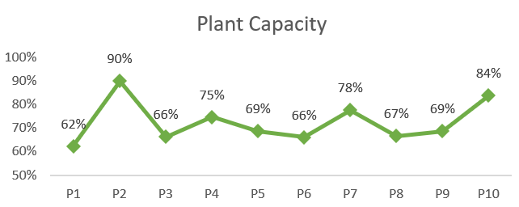
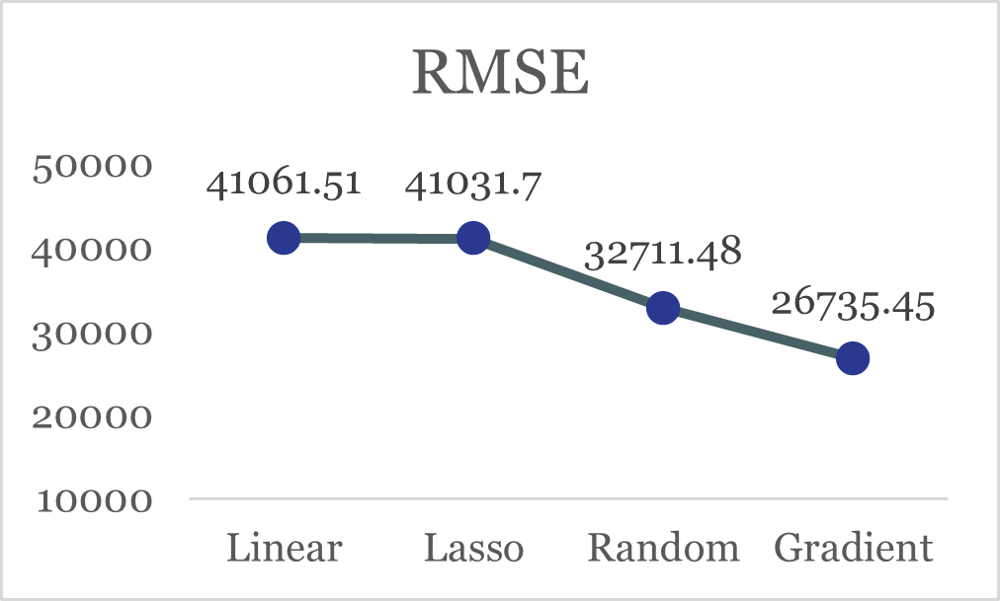
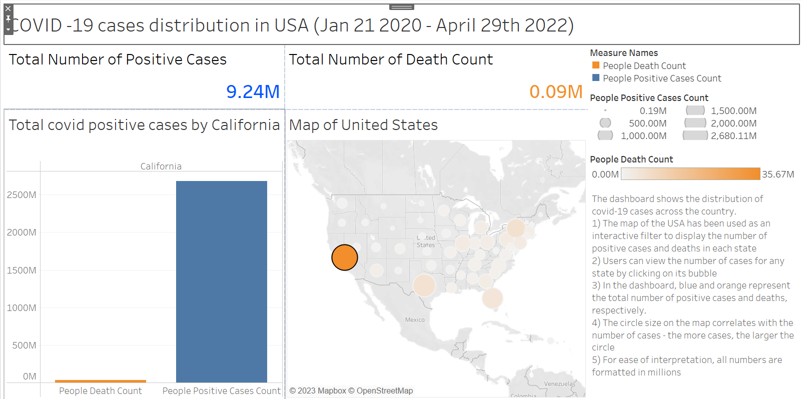
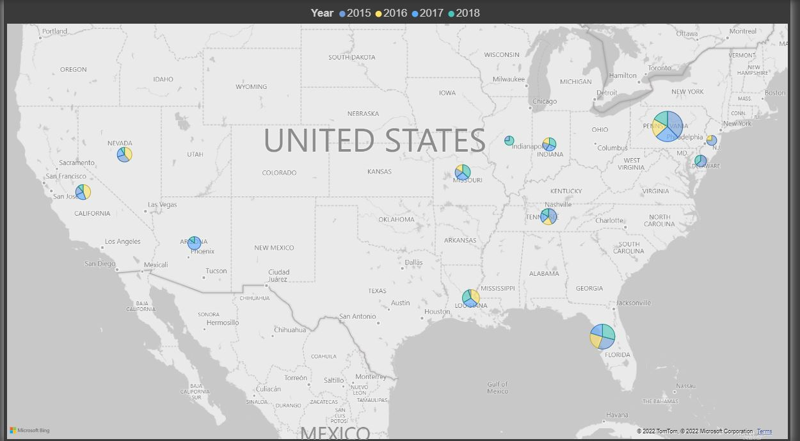
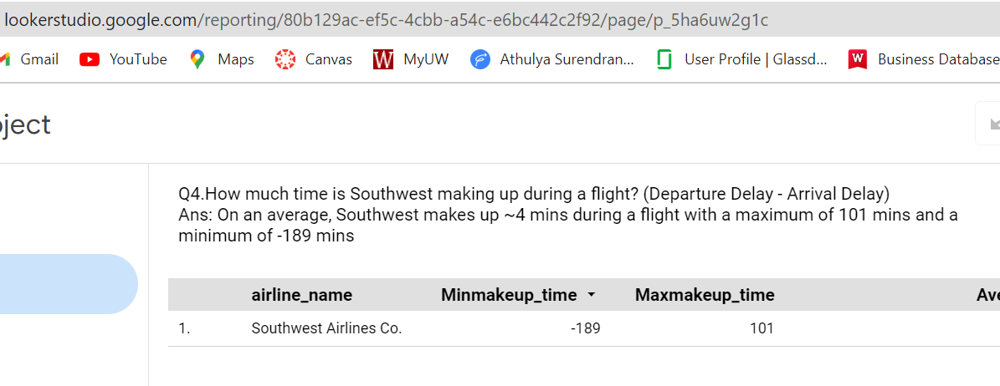

📁 List of Projects
🧠 Core Skills
Python SQL R Data Modeling ETL/ELT Development Dashboarding Automation Statistical Analysis A/B Testing Machine Learning & Predictive Modeling
⚙️ Tools & Technologies
Databases & Cloud: AWS (S3, Redshift, Glue, QuickSight, SageMaker), GCP (BigQuery, Looker), Azure Databricks, Snowflake Data Engineering: Airflow, DBT, Fivetran, PySpark, API Integration, EDX Visualization: Tableau, Power BI, QuickSight, Looker, Plotly, Seaborn, Matplotlib ML & Analytics Libraries: Pandas, NumPy, Scikit-learn, Statsmodels, TensorFlow, PyTorch, Keras Version Control & Others: Git, VS Code, Advanced Excel
🧩 Specialized Expertise
Automation & Workflow Optimization Experimentation Design (A/B Testing) KPI Dashboards & Reporting Geospatial Analytics Statistical Modeling Data-Driven Strategy
Projects
Project List

Supply Chain Optimization

House Price Prediction

US Covid Data Analysis

Inflation Trend Analysis
